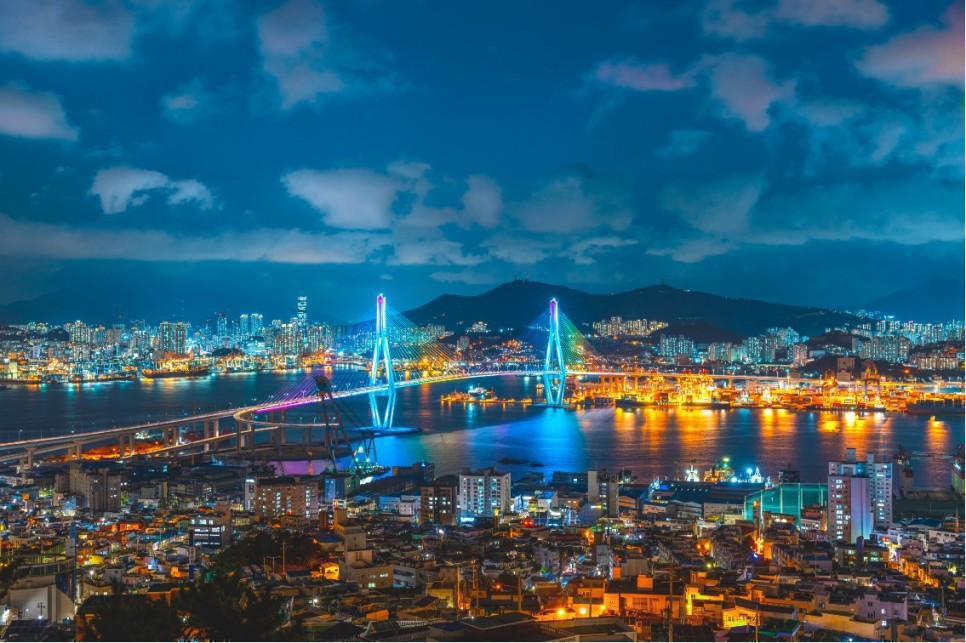
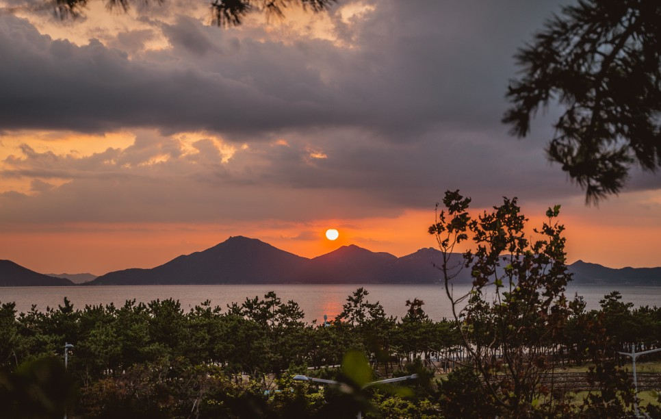

가을이 되면 하얀 억새군락이 멋진 장관을 연출하는 승학산은 가을 트레킹의 필수 코스 중 하나다. 능선을 따라 드넓게 펼쳐진 승학산의 초원에는 햇빛을 받아 황금빛으로 하늘거리는 억새풀이 가득하다. 가을의 정취를 한층 더해주는 승학산의 억새를 찾아 즐거운 마음으로 트레킹을 할 수 있다.
가을을 담은 승학산 억새평원에서 눈에 가득 담아온 한 컷의 평온함이 오래도록 가슴에 남는 곳이다.
패키지 예약하기

"야경 드라이브" 청학배수지 전망대
영도 청학배수지 전망대에서 내려다보는 부산항대교는 시시각각 다른 종류의 빛을 쏟아낸다. 부둣가의 조명 뒤로 보이는 도심의 불빛들까지. 입이 절로 벌어지는 광경이 펼쳐진다.
영도에서 보는 야경은 광안리나 황령산에서 보는 풍경과는 다른 느낌의 부산을 만끽할 수 있는 곳이다.
패키지 예약하기

"인생 노을" 몰운대
국가지질공원으로 지정된 몰운대는 우거진 송림과 기암괴석으로 이루어진 해안절경이 멋진 경관을 연출한다. 해안산책로를 따라가면 옥빛 바다를 가장 가까이에서 만날 수 있다.
몰운대는 부산에서 가장 아름다운 낙조를 감상할 수 있는 최고의 장소이기 때문에 해가 지기 시작하면 일몰의 순간을 기다려야 한다. 몰운대에서 바라보는 낙조는 금가루를 뿌려놓은 듯 눈이 부시게 빛난다.
패키지 예약하기